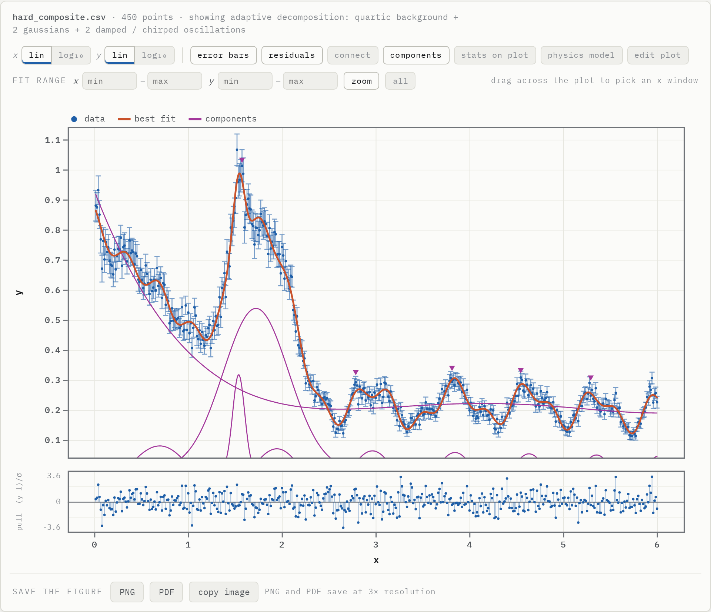

Fit the curve nobody wrote down.
Drop in x, y and σ. Curve Fit Bench searches 442 physical models, and when none of them describes your data it builds the model itself, piece by piece, until what is left is noise. You get the formula, every parameter with its uncertainty, and χ².
Runs in the browser · nothing to install · data never leaves your computer
Most fitting tools answer the question you already knew.
You pick a model, the software fits it, and a small χ² tells you nothing about whether the model was the right one. Curve Fit Bench starts from the data instead.
You guess a Lorentzian, it fits “well enough”, and the shoulder on the left is quietly absorbed into the background.
Every model family competes, extra parameters must earn their place by BIC and an F-test, and the residuals are tested for leftover structure.
Real spectra — bands on a curved background, a step with a dip, oscillations on a power law — match no textbook form, so the fit is the least bad wrong answer.
Adaptive decomposition adds peaks, Fano lines, steps and chirped oscillations where the residual demands them, and stops at the noise.
One χ² for the whole curve hides the region the model misses, and the parameter errors say nothing about what the data actually constrain.
The fit is judged region by region, and the parameter explorer shows how each value moves the curve against your points.
When no textbook model fits, it builds one.
At a conference demo, ten deliberately hard datasets broke every named model — reduced χ² from 3 to 217. The same ten now land between 0.93 and 1.21, and on 1000 random complex spectra with known truth, 999 fits sit closer to the true curve than the noise itself.
- Components kept only on strong BIC evidence, never for a one-point gain
- Tried in x, ln x or 1/x against y or ln y — a log-periodic power law becomes simple
- Every component drawn, every parameter with an error bar

Everything a results section needs.
442 named models
BCS gap and superfluid density, WHH Hc2, Bloch–Grüneisen and Debye integrals, Lifshitz–Kosevich, BTK, Fano, Tauc–Urbach, Havriliak–Negami and many more.
Says when nothing fits
Noise measured from your data, runs test on residuals, fit quality per region, and physical bounds so a linewidth never goes negative.
Type any model
A*exp(-x/tau) + c ; tau>0 — 65 functions, bounds, fixed parameters, and several equations compared side by side.
See what the data constrain
Sweep any fitted parameter over several values and watch χ²/ν change, in a second plot with its own editor.
Origin-style plot editing
Stats box on the plot, axis ranges, mirrored ticks, fonts and colours; PNG and PDF at 3× resolution.
Nothing is uploaded
The whole bench is a single page that runs on your computer — usable on confidential and pre-publication data.
Your lab uses it. Help keep it growing.
Curve Fit Bench is built by two early-career physicists. Licences, sponsorship and custom work pay for new models, verification and support — and keep the bench free for every student who needs it.
Lab licence
Priority model requests, your file formats, email support.
Commercial & OEM
Embed, modify or host the bench in your product or instrument.
Custom models
The model your analysis needs, verified like the rest of the library.
Workshops
A hands-on fitting and statistics session for your department.